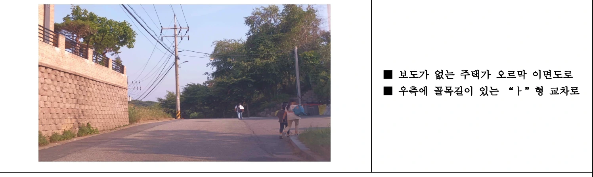

710. Hai cách lái xe nào là an toàn nhất trong tình huống sau?

- ①Vì xe ô tô hoặc người đi bộ có thể từ con hẻm bên phải tiến vào nên phải chú ý khi lái xe.
- ②Vì không có vạch kẻ giữa đường, nên phải đi về sát mép bên phải, gần người đi bộ nhất có thể.
- ③Vì không có biển báo giới hạn tốc độ tối đa nên tăng tốc và đi nhanh.
- ④Vừa lái xe ở bên phải đường vừa liên tục nhấn còi với người đi bộ để yêu cầu họ tránh đường.
- ⑤Nếu cản trở việc lưu thông của người đi bộ, thì phải lái xe chậm hoặc tạm dừng lại.
Xem đáp án
Đáp án
① Vì xe ô tô hoặc người đi bộ có thể từ con hẻm bên phải tiến vào nên phải chú ý khi lái xe.
⑤ Nếu cản trở việc lưu thông của người đi bộ, thì phải lái xe chậm hoặc tạm dừng lại.
Căn cứ
Khi vượt qua người đi bộ trên đường không có vạch kẻ giữa đường, bạn phải lái xe chậm ở khoảng cách an toàn, nếu cản trở lối đi của người đi bộ thì phải giảm tốc độ hoặc dừng lại tạm thời để người đi bộ vượt qua an toàn. Khi đi vào giao lộ, bạn phải thận trọng đối với các phương tiện khác và người đi bộ. Tránh bấm còi liên tục mà không có lý do chính đáng.
Phần căn cứ là bản dịch máy để tham khảo.